Shared UI Library: Software Detail Design
1. Überblick
Die Shared UI Library (libs/shared-ui) stellt gemeinsame Thymeleaf-Templates und CSS-Styles bereit, die von allen Services mit Web-Oberfläche genutzt werden. Sie vermeidet Code-Duplikation der UI-Schicht und stellt ein einheitliches Look-and-Feel über alle Services sicher (STK-048).
Aktuell verwenden der Blog Content Service und der User Management Service identische Layout-Templates und CSS-Styles, die bisher als Kopien in jedem Service vorliegen. Die Shared UI Library extrahiert diese gemeinsamen Ressourcen in ein zentrales Maven-Modul.
2. Modulstruktur
Die Shared UI Library ist ein reines Ressourcen-Modul ohne Java-Code (SWR-065, SWA-033). Sie wird als Maven-Dependency von den Services eingebunden.
Das folgende Diagramm zeigt die Abhängigkeitsbeziehungen zwischen der Shared UI Library und den Services:

3. Ressourcen-Struktur
Die Shared UI Library stellt ihre Ressourcen über den Classpath bereit. Thymeleaf löst Template-Referenzen automatisch über den Classpath auf, sodass Templates aus dem JAR der Library transparent verfügbar sind.
Das folgende Diagramm zeigt die Verzeichnisstruktur der Library:

3.1. Layout-Template (SWR-066)
Das Master-Layout templates/shared/layout/default.html definiert die HTML-Grundstruktur aller Seiten. Es bindet Pico CSS als Framework, das gemeinsame custom.css und die Thymeleaf Layout Dialect-Platzhalter ein. Services referenzieren das Layout über layout:decorate="~{shared/layout/default}".
Das Layout enthält drei Bereiche:
-
Header: Wird über
th:replaceaus einem service-lokalen Fragment eingebunden. Jeder Service definiert seinen eigenen Header mit service-spezifischer Navigation. -
Content: Wird über
layout:fragment="content"vom jeweiligen Service-Template befüllt. -
Footer: Wird über
th:replaceaus dem gemeinsamen Footer-Fragment der Library eingebunden.
3.2. Footer-Fragment (SWR-068)
Das Footer-Fragment templates/shared/fragments/footer.html stellt einen einheitlichen Footer über alle Services bereit. Er enthält:
-
Copyright-Hinweis mit aktuellem Jahr
-
Link auf Impressum (
/impressum) -
Link auf Datenschutzerklärung (
/privacy) -
Versionsnummer der Anwendung (über
appVersionModel-Attribut)
3.3. CSS-Styles (SWR-067)
Die Datei static/css/custom.css enthält plattformweite CSS-Anpassungen:
-
CSS Custom Properties für Tenant-Branding-Hooks (
--blog-primary) -
Sticky-Footer-Layout (Flexbox-basiert)
-
Pico CSS Ergänzungen
Services können zusätzliche CSS-Dateien für service-spezifische Styles einbinden.
4. Abgrenzung
Die folgenden UI-Elemente verbleiben bewusst in den jeweiligen Services:
-
Header-Fragmente: Jeder Service hat eigene Navigation (Blog-Navigation im Blog Content Service, Auth-Menü im User Management Service)
-
Service-spezifische Templates: Seiten wie Post-Liste, Login, Admin-UI sind service-spezifisch
-
Error-Pages: Können service-spezifisch oder über die Library bereitgestellt werden
5. Integration in Services
Die Integration der Shared UI Library in einen Service erfolgt in drei Schritten:
-
Maven-Dependency auf
shared-uihinzufügen -
Service-eigenes Layout durch Referenz auf
shared/layout/defaultersetzen -
Footer-Referenz auf
shared/fragments/footerumstellen
6. Anforderungsabdeckung
Die folgende Tabelle zeigt die Zuordnung der Anforderungen zu den Komponenten der Shared UI Library:
| Anforderung | Beschreibung | Umsetzung |
|---|---|---|
STK-048 |
Gemeinsame UI-Bibliothek für Templates und Styles |
libs/shared-ui Maven-Modul |
SWR-065 |
Shared UI Library als Maven-Modul |
pom.xml mit Classpath-Ressourcen |
SWR-066 |
Gemeinsames Layout-Template |
templates/shared/layout/default.html |
SWR-067 |
Gemeinsame CSS-Styles |
static/css/custom.css |
SWR-068 |
Gemeinsamer Footer |
templates/shared/fragments/footer.html |
SWA-033 |
Shared UI Library Architektur |
Modul-Struktur, Classpath-Auflösung, provided Dependencies |